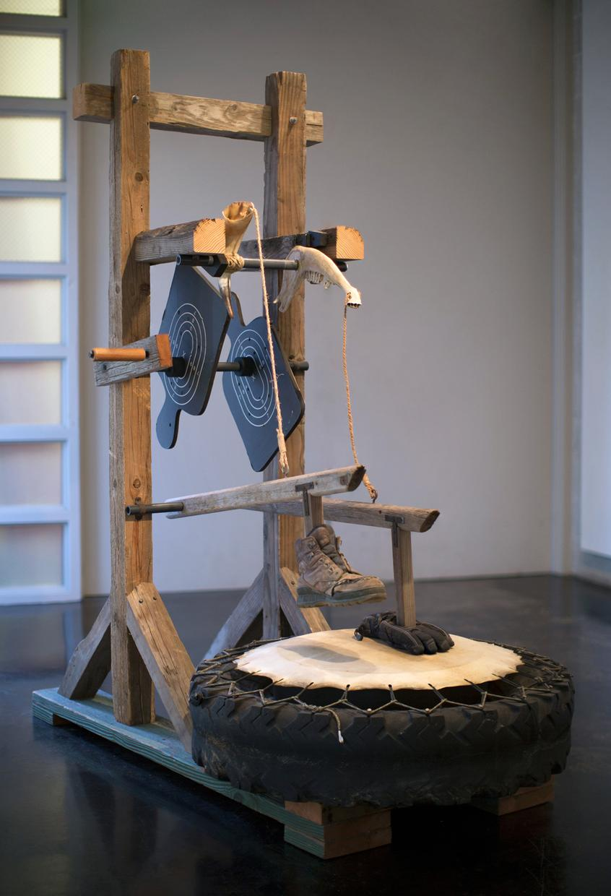
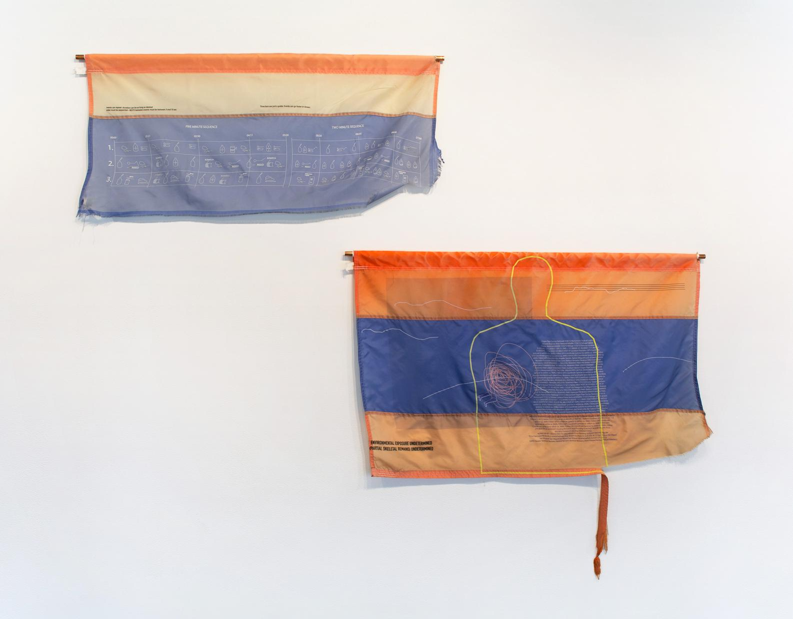

Along the Border
Tang Teaching Museum • Saratoga Springs, NY
February 17–April 22, 2018
Along the Border presented the work of experimental composer and multimedia artist Guillermo Galindo, whose instruments and graphic scores transform objects recovered along the Mexico–United States border into sound. Galindo constructs what he calls “cybertotemic sonic objects” from discarded materials—including shoes, shell casings, bottles, and other remnants of migration—and activates them through musical composition and performance.
Bringing together instruments, found objects, graphic scores, and sound, the exhibition considered the border not only as a geopolitical boundary but as a material and sonic landscape shaped by migration, displacement, and exchange. Weathered flags became musical scores; abandoned belongings became instruments. Rather than treating these objects as passive evidence, Galindo used sound to draw attention to the individual histories and human movement embedded within them.
The exhibition culminated in a live performance of Galindo’s Sonic Borders II and a workshop exploring resonance and sonic healing.
Curated with Rachel Seligman and Mehmet Odekon

